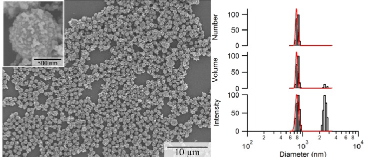
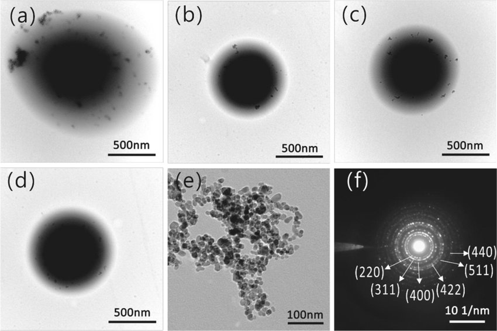
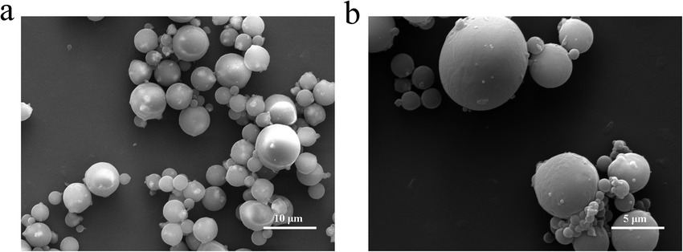

The Role of Magnetic Nanoparticles in Medicine
Magnetic nanoparticles (MNPs) are widely used in biomedical applications due to their ability to be controlled by external magnetic fields. They enhance targeted drug delivery, imaging, and even hyperthermia treatment for cancer.


